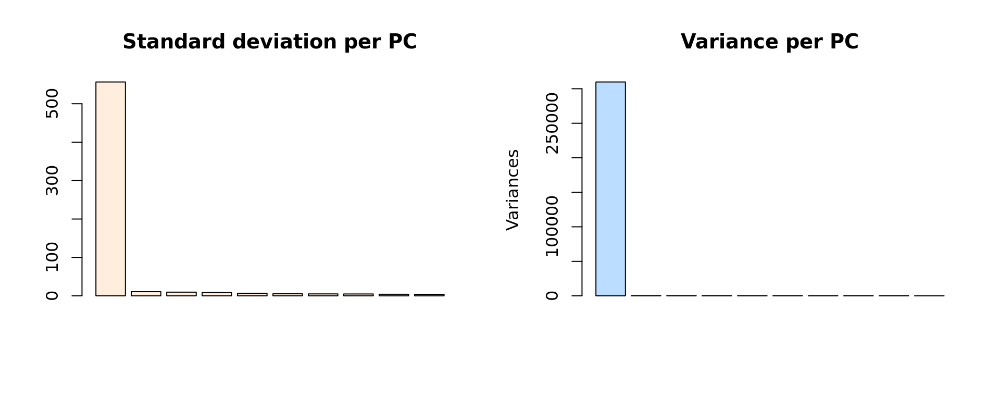
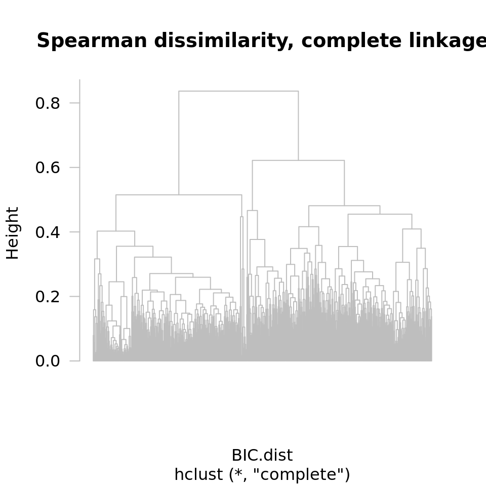
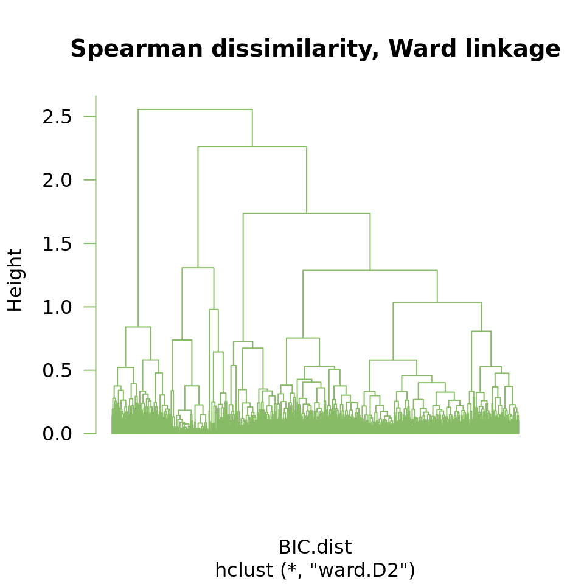
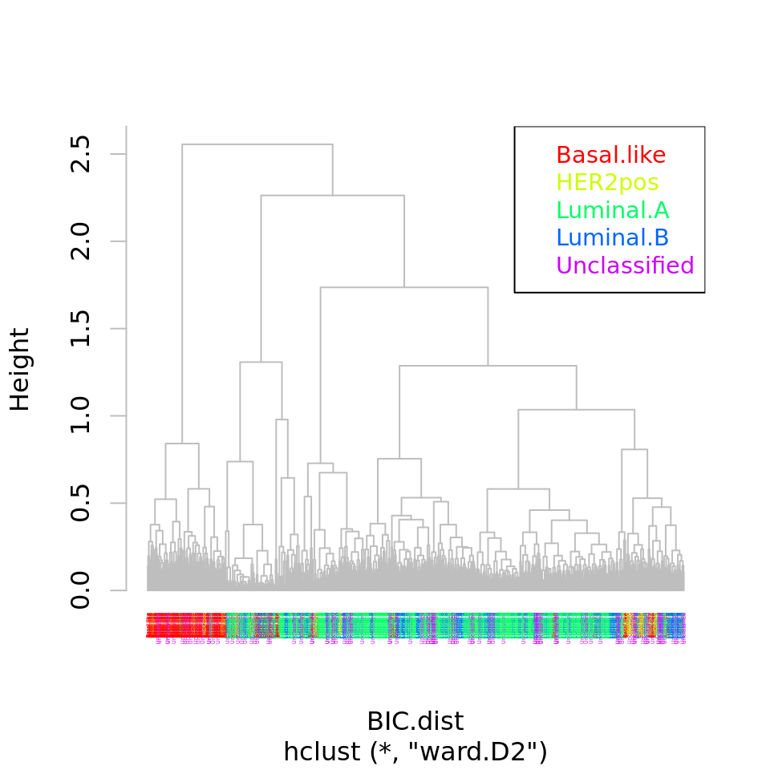
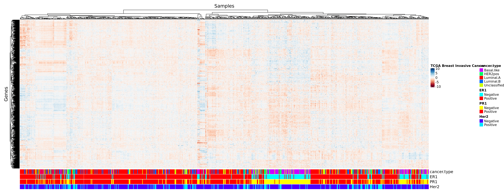
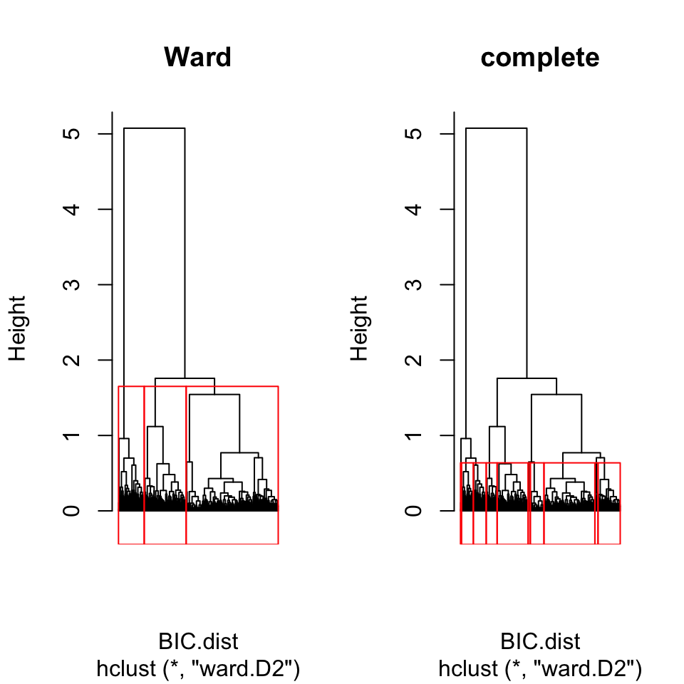
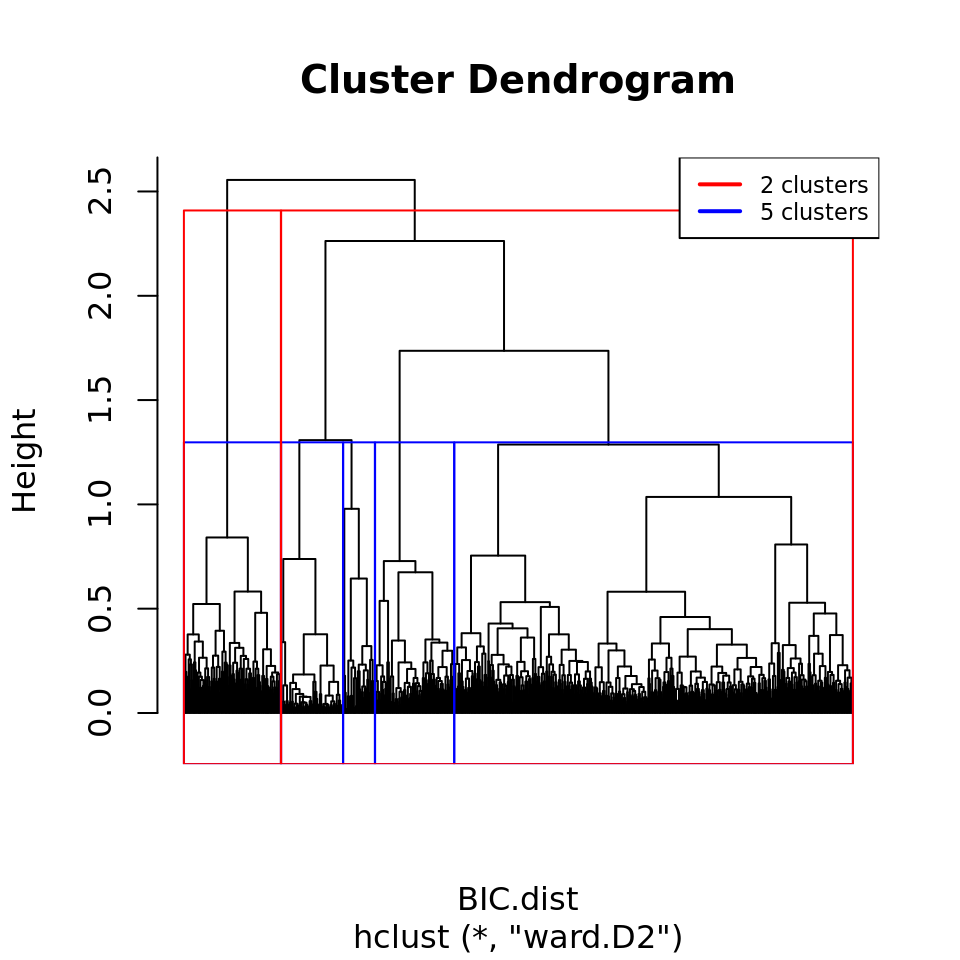
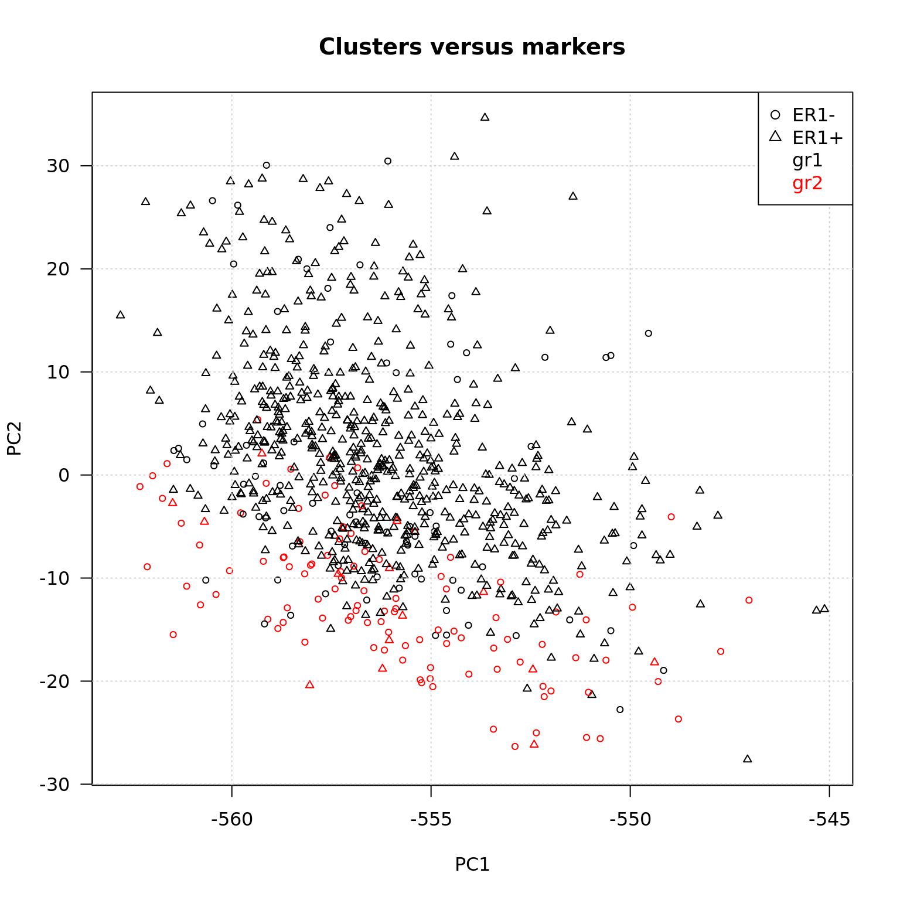

TP de la séance 4, Clustering
Diplôme Interuniversitaire en Bioinformatique intégrative (DU-Bii 2019)
Anne Badel, Frederic Guyon & Jacques van Helden
2020-06-01
## Install required packages
packages <- c("ClassDiscovery",
"clues",
"ComplexHeatmap",
"FactoMineR",
"RColorBrewer")
message("Loading libraries ", paste(collapse = ", ", packages))## Loading libraries ClassDiscovery, clues, ComplexHeatmap, FactoMineR, RColorBrewerfor (pkg in packages) {
if (!require(pkg, character.only = TRUE)) {
install.packages(pkg)
require(pkg, character.only = TRUE)
}
}## Loading required package: ClassDiscovery## Loading required package: cluster## Loading required package: oompaBase## Loading required package: clues## Loading required package: ComplexHeatmap## Loading required package: grid## ========================================
## ComplexHeatmap version 2.2.0
## Bioconductor page: http://bioconductor.org/packages/ComplexHeatmap/
## Github page: https://github.com/jokergoo/ComplexHeatmap
## Documentation: http://jokergoo.github.io/ComplexHeatmap-reference
##
## If you use it in published research, please cite:
## Gu, Z. Complex heatmaps reveal patterns and correlations in multidimensional
## genomic data. Bioinformatics 2016.
## ========================================## Loading required package: FactoMineR## Loading required package: RColorBrewerlibrary(knitr)
#library(kableExtra) ## Note: kableExtra has some side effect on kable: column padding is null, so all numbers seem to be mixed upIntroduction
But de ce TP
Le tutoriel ci-dessous vous guidera pas-à-pas dans l’utilisation de fonctions R pour effectuer un clustering sur des profils transcriptomiques RNA-seq.
Source des données
Les données sont issues de la base Recount2 (https://jhubiostatistics.shinyapps.io/recount/). Nous avons sélectionné l’étude TCGA (The Cancer Genome Atlas; https://cancergenome.nih.gov/), regroupant des données RNA-seq pour plus de 12.000 patients souffrant de différents types de cancer. Nous nous intéressons ici uniquement aux données Breast Invasive Cancer (BIC) concernant le cancer du sein.
Les données ont été préparées pour vous, selon la procédure détaillée au cours sur l’analyse différentielle de données RNA-seq.
Filtrage des gènes à variance nulle et de ceux ccontenant trop de zéros.
Normalisation (méthode robuste aux outliers)
Analyse différentielle multi-groupes (en utilisant le package Bioconductor
edgeR).Correction des P-valeurs pour tenir compte des tests multiples (nous avons testé ici ~20.000 gènes). Nous estimons le False Discovery Rate (FDR) selon la méthode de Benjamini-Hochberg (fonction R
p.adjust(all.pvalues, method="fdr")).Sélection de gènes différentiellement exprimés sur base d’un seuil \(\alpha = 0.05\) appliqué au FDR.
Choisir son environnement de travail
Les données seront analysées sur le serveur RStudio de l’IFB. Ouvrez serveur RStudio https://rstudio.cluster.france-bioinformatique.fr/ et identifiez-vous.
Dossier partagé contenant les données
Pour les cours du DUBii, les données sont dans un répertoire partagé
/shared/projects/du_bii_2019/data/module3/seance4/BIC/
Nous définissons ci-dessous une variable data.folder qui indique le chemin de ce dossier partagé. Si noous désirons reproduire les analyses sur une autre machine, eci nous permettra de facilement modifier le chemin en fonction de la configuration locale.
Contenu du dossier de données
Utilisez les commandes R suivantes:
list.files()pour vérifier le contenu du dosserdata.folder,file.size()pour calculer la taille de ces fichiers.
Astuces:
list.files()retourne par défaut le nom de fichier, mais avec l’optionfull.names=TRUEvous obtiendrez le chemin complet.- Calculez la taille des fichiers en bytes et en Megabytes (\(1Mb = 1024 \cot 1024 \cdot b\)), sachant que pour chaque conversion il faut diviser par 1024.
- Vous pouvez consulter notre solution à l’aide du code suivant (cliquer sur Code pour l’afficher).
# Return file sizes (in bytes)
message("Listing files in data folder: ", data.folder)
data.files <- list.files(path = data.folder) # List the data files
print(data.files) [1] "BIC_counts_all-genes.tsv.gz" "BIC_counts_filtered-genes.tsv.gz" "BIC_edgeR_DEG_table.tsv" "BIC_edgeR_DEG_table.tsv.gz" "BIC_log2-norm-counts_all-genes.tsv.gz" "BIC_log2-norm-counts_edgeR_DEG_fdr_0.01.tsv"
[7] "BIC_log2-norm-counts_edgeR_DEG_fdr_0.01.tsv.gz" "BIC_log2-norm-counts_edgeR_DEG_top_1000.tsv.gz" "BIC_log2-norm-counts_filtered-genes.tsv" "BIC_log2-norm-counts_filtered-genes.tsv.gz" "BIC_pheno.tsv.gz" "BIC_sample-classes.tsv.gz" ## Full path
data.path <- list.files(path = data.folder, full.names = TRUE) # List the data files
print(data.files) [1] "BIC_counts_all-genes.tsv.gz" "BIC_counts_filtered-genes.tsv.gz" "BIC_edgeR_DEG_table.tsv" "BIC_edgeR_DEG_table.tsv.gz" "BIC_log2-norm-counts_all-genes.tsv.gz" "BIC_log2-norm-counts_edgeR_DEG_fdr_0.01.tsv"
[7] "BIC_log2-norm-counts_edgeR_DEG_fdr_0.01.tsv.gz" "BIC_log2-norm-counts_edgeR_DEG_top_1000.tsv.gz" "BIC_log2-norm-counts_filtered-genes.tsv" "BIC_log2-norm-counts_filtered-genes.tsv.gz" "BIC_pheno.tsv.gz" "BIC_sample-classes.tsv.gz" data.file.sizes <- file.size(data.path) # Get the size of the data files, in bytes
## Add file names
## (for some strange reason, file.size returns a vector
## with no names, which is not very convenient)
names(data.file.sizes) <- data.files
## Compute file sizes in megabytes
data.file.Mb <- signif(digits = 2, data.file.sizes / (1024^2))
kable(data.frame(data.file.Mb))| data.file.Mb | |
|---|---|
| BIC_counts_all-genes.tsv.gz | 79.000 |
| BIC_counts_filtered-genes.tsv.gz | 47.000 |
| BIC_edgeR_DEG_table.tsv | 1.600 |
| BIC_edgeR_DEG_table.tsv.gz | 1.600 |
| BIC_log2-norm-counts_all-genes.tsv.gz | 59.000 |
| BIC_log2-norm-counts_edgeR_DEG_fdr_0.01.tsv | 85.000 |
| BIC_log2-norm-counts_edgeR_DEG_fdr_0.01.tsv.gz | 62.000 |
| BIC_log2-norm-counts_edgeR_DEG_top_1000.tsv.gz | 6.000 |
| BIC_log2-norm-counts_filtered-genes.tsv | 120.000 |
| BIC_log2-norm-counts_filtered-genes.tsv.gz | 62.000 |
| BIC_pheno.tsv.gz | 0.950 |
| BIC_sample-classes.tsv.gz | 0.019 |
Lire le tableau de valeurs d’expression
Nous allons maintenant lire le fichier d’expression. Pour cela, nous concaténons le chemin du dossier de données et le nom du fichier d’expressiion (BIC_log2-norm-counts_edgeR_DEG_top_1000.tsv.gz).
Ce fichier contient le comptages de lectures RNA-seq par gène, avec une sélection des gènes déclarés positifs pour le test de comparaison de moyennes multiples (voir-ci-dessus). Par ailleurs, nous avons arbitrairement appliqué un seuil supplémentaire en n’exportant que les 1000 gènes les plus significatifs, pour éviter de passer trop de temps sur le clustering hiérachique (complexité quadratique).
# Define the path of the expression file, by concatenating the data folder and the file name
# Note that file.path is convenient because it automatically used the appropriate parameter to separate the elements of a path (/ on Unix, \\ on Windows)
BIC.expr.file <- file.path(data.folder, "BIC_log2-norm-counts_edgeR_DEG_top_1000.tsv.gz")
# Load expression
message("Loading expression file\t", BIC.expr.file)
BIC.expr <- read.table(file = BIC.expr.file, header = TRUE)Mesure de la taille des données
Prenez le temps d’identifier
- la taille du jeu de données
- le nombre d’individus
- le nombre de variables
Remarque : Classiquement, en analyse de données, les individus sont les lignes du tableau de données, les colonnes sont les variables.
Pour des raisons historiques, en analyse transcriptomique les données sont toujours fournies avec
- 1 ligne = 1 gène
- 1 échantillon biologique = 1 colonne
Cette convention a été établie en 1997, lors des toutes premières publications sur le transcriptome de la levure. Dans ces études, l’objet d’intérêt (l’“éindividu”) était le gène, et les variables étaient ses mesures d’expression dans les différentes conditions testées.
Pour l’anlayse de tissus cancéreux, on considère au contraire que l’“objet” d’intérêt est l’échantillon prélevé sur le patient, et les variables sont les mesures d’expression des différents gènes chez un patient.
Ce qui implique de faire attention, et éventuellement de travailler sur la matrice transposée (fonction t() en R) pour utiliser correctement les fonctions classiques.
[1] 1000 819[1] "ENSG00000000003.14" "ENSG00000000419.12" "ENSG00000000457.13" "ENSG00000000460.16" "ENSG00000000938.12" "ENSG00000000971.15"[1] "X1AB92ADA.637E.4A42.A39A.70CEEEA41AE3" "DA98A67C.F11F.41D3.8223.1161EBFF8B58" "X06CCFD0F.7FB8.471E.B823.C7876582D6FC" "A33B2F42.6EC6.4FB2.8BE5.542407A0382E" "D021A258.8713.4383.9DCA.45E2F54A0411" "C705FA90.D9AA.4949.BACA.1C022A14CB03" Charger les étiquettes de classes des échantillons
Le fichier BIC_sample-classes.tsv.gzcontient les étiquettes de classes des échantillons.
BIC.sample.classes <- read.table(
file.path(data.folder, "BIC_sample-classes.tsv.gz"),
header = TRUE)
kable(BIC.sample.classes[1:10,])| cancer.type | ER1 | PR1 | Her2 | |
|---|---|---|---|---|
| 1AB92ADA-637E-4A42-A39A-70CEEEA41AE3 | Luminal.A | Positive | Positive | Negative |
| DA98A67C-F11F-41D3-8223-1161EBFF8B58 | Unclassified | Positive | Negative | Negative |
| 06CCFD0F-7FB8-471E-B823-C7876582D6FC | HER2pos | Negative | Negative | Positive |
| A33B2F42-6EC6-4FB2-8BE5-542407A0382E | Unclassified | Positive | Negative | Negative |
| D021A258-8713-4383-9DCA-45E2F54A0411 | Luminal.A | Positive | Positive | Negative |
| C705FA90-D9AA-4949-BACA-1C022A14CB03 | Luminal.A | Positive | Positive | Negative |
| 85380A2D-9951-4D4B-A2A4-6F5F2AFC54E3 | Luminal.A | Positive | Positive | Negative |
| F53A9C63-1AF7-4CBC-B8B7-4AA7AAED3364 | Luminal.A | Positive | Positive | Negative |
| 13EF5323-EAD9-4BC7-8AC4-33875BF12E17 | Luminal.B | Positive | Positive | Positive |
| 079EACA1-0319-4B54-B20B-673F4576C69D | Basal.like | Negative | Negative | Negative |
Chaque échantillon a été assigné à une classe selon la combinaison de 3 marqueurs immunologiques:
- Estrogen Receptor 1 (ER1)
- Progesterone Receptor 1 (PR1)
- Human epidermal growth factor receptor 2 (Her2)
Utilisez
La fonction R
summary()pour compter le nombre de patientes positives / négatives pour chacun de ces trois marqueurs.La fonction R
table()pour calculer le nombre d’échantillons de chaque type de cancer.La fonction R
table()pour calculer une table de contiingence des marqueurs ER1 et PR1
cancer.type ER1 PR1 Her2
Basal.like :131 Negative:184 Negative:267 Negative:631
HER2pos : 41 Positive:635 Positive:552 Positive:188
Luminal.A :422
Luminal.B :118
Unclassified:107
Basal.like HER2pos Luminal.A Luminal.B Unclassified
131 41 422 118 107
Negative Positive
Negative 172 12
Positive 95 540, , = Negative
Negative Positive
Negative 131 8
Positive 70 422
, , = Positive
Negative Positive
Negative 41 4
Positive 25 118Projection ACP des échantillons
Nous allons réaliser une ACP sans mise à l’échelle.
## Transformation ACP
BIC.prcomp <- prcomp(BIC.expr.transposed, center = FALSE, scale. = FALSE)
names(BIC.prcomp) # check the name of the fields of the PCA object[1] "sdev" "rotation" "center" "scale" "x" par(mfrow = c(1,2))
## Plot de l'écart-type sur les premières composantes
barplot(BIC.prcomp$sdev[1:10], col = "#FFEEDD",
main = "Standard deviation per PC")
## Visualisation des données
plot(BIC.prcomp, main = "Variance per PC", col="#BBDDFF")
Définissez une couleur pour chaque classe, et assignez à chaque échantillon la couleur correspondant à sa classe. Dessinez ensuite un nuage de points avec les coordonnées de chaque échantillon dans les 1ère et 2ème composantes (PC2 vs PC1)
# Assign a color to each cancer type
classes <- unique(BIC.sample.classes$cancer.type)
class.colors <- rainbow(n = length(classes))
names(class.colors) <- classes
data.frame(class.colors) class.colors
Luminal.A #FF0000FF
Unclassified #CCFF00FF
HER2pos #00FF66FF
Luminal.B #0066FFFF
Basal.like #CC00FFFF# Associate a color to each sample accordinig to its cancer type
sample.colors <- class.colors[BIC.sample.classes$cancer.type]
table(BIC.sample.classes$cancer.type, sample.colors) sample.colors
#0066FFFF #00FF66FF #CC00FFFF #CCFF00FF #FF0000FF
Basal.like 0 0 0 0 131
HER2pos 0 0 0 41 0
Luminal.A 0 422 0 0 0
Luminal.B 118 0 0 0 0
Unclassified 0 0 107 0 0Question: comment interprétez-vous les barplots des écarts-types et variances pour les premières comosantes ? A discuter pendant le cours.
Clustering hiérarchique
Calcul de la matrice de distance
Nous allons maintenant calculer la distance entre chaque paire d’échantillon, en utilsiant comme métrique le coefficient de corrélation de Spearman, plus adapté à ce type de données que la distance euclidienne utilisée sur les données iris durant le cours
Lisez l’aide de la fonction
cor, et utilisez cette fonction pour calculer la matrice de corrélation entre échantillons.transformation du corrélation de Spearman en une distance à l’aide de la transformation : \(d = 1 - r\)
## Compute Spearman correlation coefficient
BIC.cor <- cor(BIC.expr, method = "spearman")
# Check the dimensions of the correlation matrix
# (should be N x N, where N is the number of samples)
dim(BIC.cor)[1] 819 819hclust
Faites un premier clustering hiérarchique, avec le critère d’aggrégation par défaut (lisez l’aide de la fonction hclust() pour savoir quelle est ce critère par défaut).
## Run hierarchical clustering on the expression data
## (use default parameters)
BIC.hclust.complete <- hclust(BIC.dist)
## Plot the resulting tree
plot(BIC.hclust.complete, labels = F, hang = -1, las = 1, col = "grey",
main = "Spearman dissimilarity, complete linkage")
- faire un deuxième clustering hiérarchique, avec le critère d’aggrégation de Ward
## Run hierarchical clustering with Ward agglomeration
BIC.hclust.ward <- hclust(BIC.dist, method = "ward.D2")
## Plot the resulting tree
plot(BIC.hclust.ward, labels = F, hang = -1, las = 1, col = "#88BB66",
main = "Spearman dissimilarity, Ward linkage")
- Redessiner les arbres de ces deux résultats de clustering en colorant les échantillons selon la classe de cancer.
ClassDiscovery::plotColoredClusters(
BIC.hclust.ward,
labs=BIC.sample.classes$cancer.type, col = "grey",
cols=sample.colors, cex=0.2)
legend("topright",
legend=sort(classes),
col = class.colors,
text.col = class.colors, cex=0.9)
- Comparer les classifications obtenues avec les règles d’agglomératioin complète et Ward, respectivement, en étudiant l’impact du nombre de clusters.
Astuces:
- Cous pouvez utiliser les commandes
rect.hclustetcutreepour visualiser les clusters sur le dendrogramme, puis récupérer les clusters.
Combinaison d’un arbre et d’une carte de température
La fonction R heatmap() permet de représenter à la fois les arbres produit par le clustering hiérarchique, et les profils d’expression.
Par défaut, elle effectue simultanément un clustering hiérarchique sur les lignes et sur les colonnes, ce qui permet de distinguer non seulement les groupes d’échantillons biologiques, mais également ceux de gènes.
Attention: la fonction heatmap() effectue par défaut un clustering hiérarchique sur les lignes et colonnes de votre matrice d’expression.
heatmap(as.matrix(BIC.expr),
distfun = function(x) { as.dist(1 - cor(t(x), method = "spearman")) },
hclustfun = function(x) hclust(x, method = "ward.D2"),
labRow = NA, labCol = NA)
Heat map of the expression matrix clustered by genes (rows) and samples (columns).
# Compute mean value per gene
gene.means <- apply(BIC.expr, 1, mean)
gene.sd <- apply(BIC.expr, 1, sd)
# Compute gene-wise centered expression values
BIC.expr.genes.centered <- BIC.expr - gene.means
# Compute gene-wise centred + scaled expression values
BIC.expr.genes.standardized <- BIC.expr.genes.centered / gene.sd
summary(unlist(BIC.expr.genes.standardized)) Min. 1st Qu. Median Mean 3rd Qu. Max.
-8.969062 -0.622261 -0.001282 0.000000 0.618155 9.470421 hist(unlist(BIC.expr.genes.standardized), breaks = 100,
main = "Gene-wise standardized expression values",
xlab = "z-score", ylab = "Number of measures",
col = "#DDEEFF", xlim = c(-7,7))
# Draw a vertical grid
abline(v = -7:7, col = "#BBBBBB", lty = "dotted")
#Mark center
abline(v = 0, col = "#008800", lwd = 2)
# Mark dispersion (mean +- 1 sdev)
arrows(x0 = -1, y0 = 50000, x1 = 1, y1 = 50000, length = 0.05, angle = 30, code = 3, lwd = 2, col = "#008800")Histogram of expression values after gene-wise standardization (centering and scaling).
## define a Blue - White - Red palette
frenchflag.palette <- colorRampPalette(c('dark blue','white','dark red'))
## Define a green - black - red palette
GBR.palette <- colorRampPalette(c('green','black','red'))
heatmap(as.matrix(BIC.expr.genes.standardized),
zlim = c(-4,4),
distfun = function(x) as.dist(1 - cor(t(x), method = "spearman")),
hclustfun = function(x) hclust(x, method = "ward.D2"),
labRow = NA, labCol = NA, # DO not print the labels (unreadable anyway)
col = GBR.palette(100),
scale = "none")Heat map of the expression matrix clustered by genes (rows) and samples (columns).
Draw a tree with heatmap.2()
The function heatmap.2() is derived from heatmap() but offers nice additional formatting options.
# Define a color for the heatmap
expr.colors <- heat.colors(n = 100)
# Compute dendrogram with the hclust() function
# Choose a custom dissimilirity measure
# and agglomeration rule
# compute dissimilarity between samples
sample.dist <- as.dist(1 - cor(BIC.expr, method = "spearman"))
# Run hierarchical clustering on samples
sample.clust = hclust(sample.dist, method = "complete")
# Convert the clustering result in a tree object that can be used with plot() and / or heatmap()
sample.tree <- as.dendrogram(sample.clust)
# Define colors for the cancer type
cancer.type <- unique(BIC.sample.classes$cancer.type)
type.cancer.colors <- rainbow(n = length(cancer.type))
names(type.cancer.colors) <- cancer.type
# Define colors for ER1 marker
ER1.classes <- unique(BIC.sample.classes$ER1)
ER1.colors <- rainbow(n = length(ER1.classes))
names(ER1.colors) <- ER1.classes
print(ER1.colors) Positive Negative
"#FF0000FF" "#00FFFFFF" # Define colors for PR1 marker
PR1.classes <- unique(BIC.sample.classes$PR1)
PR1.colors <- heat.colors(n = length(PR1.classes))
names(PR1.colors) <- PR1.classes
print(PR1.colors) Positive Negative
"#FF0000FF" "#FFFF00FF" # Define colors for Her2 marker
Her2.classes <- unique(BIC.sample.classes$Her2)
Her2.colors <- topo.colors(n = length(Her2.classes))
names(Her2.colors) <- Her2.classes
## Detiine annotations for the heatmap
## combining the 3 markers + cancer type
annot.tumeur.column = HeatmapAnnotation(
df = BIC.sample.classes,
col = list(cancer.type = type.cancer.colors,
ER1 = ER1.colors,
PR1 = PR1.colors,
Her2 = Her2.colors)
)
# A first heatmap
my.heatmap <- ComplexHeatmap::Heatmap(
as.matrix(BIC.expr.genes.standardized),
name = "TCGA Breast Invasive Cancer",
# col = frenchflag.palette(100),
col = brewer.pal(11,"RdBu"),
column_title = "Samples",
row_title = "Genes",
cluster_columns = sample.tree,
show_column_names = FALSE,
show_row_names = FALSE,
bottom_annotation = annot.tumeur.column
)
draw(my.heatmap)
kmeans
faire un premier kmeans, par exemple, en prenant le nombre de groupe trouvé sur le
hclustfaire une boucle pour trouver le nombre optimal de cluster, en calculant l’inertie intra totale en fonction du nombre de groupe
kmeans()$totss[faire une boucle pour i allant de 1 à 10for (i in 1:10) {}]refaire le kmeans avec ce nombre optimal
visualiser ces groupes par exemple sur une projection des données dans le plan par PCA, à l’aide de la fonction
prcomp().
Astuce: dans le résultat de prcomp(), les coordonnées des points se trouvent dans le champs x .
## Run k-means clustering with 20 centers
BIC.kmeans <- kmeans(BIC.expr.transposed, centers=20)
## Report the table of the clusters
table(BIC.kmeans$cluster)
1 2 3 4 5 6 7 8 9 10 11 12 13 14 15 16 17 18 19 20
97 64 41 61 60 31 12 4 48 29 31 56 16 50 43 73 35 26 5 37 T1 = Sys.time() # take time at the beginning of the task
I.intra = numeric(length=20)
I.intra[1] = kmeans(BIC.expr.transposed, centers=2)$totss
for (i in 2:20) {
message("Running k-means with ", i, " centers")
kmi <- kmeans(BIC.expr.transposed, centers=i)
I.intra[i] <- kmi$tot.withinss
}
# Plot a curve showint the intra-cluster variance as a function of the number of clusters
plot((1:20)-0.5, I.intra, type="h", lwd=2, col = "blue",
xlab = "k", ylab = "Intra-cluster variance",
main = "k-mean: impact of k on the intra-cluster variance")Intra-cluster variance plot. for a series of k-mean clustering with increasing values of k.
# Measure elapsed time
T2 = Sys.time()
Tdiff = difftime(T2,T1) ## Measure elapsed time
## Run k-means clustering with 2 clusters
BIC.kmeans2 <- kmeans(BIC.expr.transposed, centers = 2)
table(BIC.kmeans2$cluster) ## Cluster sizes
1 2
645 174 ## Run k-means clustering with 3 clusters
BIC.kmeans3 <- kmeans(BIC.expr.transposed, centers = 3)
table(BIC.kmeans3$cluster) ## Cluster sizes
1 2 3
201 475 143 ## Run k-means clustering with 10 clusters
BIC.kmeans10 <- kmeans(BIC.expr.transposed, centers = 10)
table(BIC.kmeans10$cluster) ## Cluster sizes
1 2 3 4 5 6 7 8 9 10
65 65 81 94 77 47 21 171 121 77 ## Cut the tree at some arbitrary levels to get clusters
## 2 clusters to see if the first subdivision corresponds to one of the 3 markers (ER1, PR1, Her2)
BIC.cutree2 <- cutree(BIC.hclust.ward, k = 2)
## 5 clusters to see if the match the cancer types defined by biologists
BIC.cutree5 <- cutree(BIC.hclust.ward, k = 5)
## Define sample colors reflecting the cluster membership
hclust.k2.colors <- BIC.cutree2
kmeans.k2.colors <- BIC.kmeans2$cluster
kmeans.k10.colors <- BIC.kmeans10$cluster
## Define characters reflecting markers
pch.cancer.type <- as.numeric(BIC.sample.classes$cancer.type)
pch.er1 <- as.numeric(BIC.sample.classes$ER1)
pch.pr1 <- as.numeric(BIC.sample.classes$PR1)
pch.her2 <- as.numeric(BIC.sample.classes$Her2)
## Compare clusters and markers on the PC plot, to evaluate whether
## the components capture relevant information
par(mfrow=c(1,2))
plot(BIC.prcomp$x[,1:2],
col = hclust.k2.colors,
pch = pch.er1,
las = 1, cex = 0.7,
main = "Hclust 2 clusters versus markers")
legend("topright", cex = 0.8, legend = c("ER1+", "ER1-"), pch = )
plot(BIC.prcomp$x[,1:2],
col = kmeans.k10.colors,
pch = pch.er1,
las = 1, cex = 0.7,
main = "K-means 10 clusters versus markers")Intra-cluster variance plot. for a series of k-mean clustering with increasing values of k.
Comparaisons
kmeans versus hclust
Nous allons maintenant comparer les résultats de ces deux méthodes de clustering.
à l’aide de la fonction
table, calculez la matrice de confusion de vos deux clustering. Commentez.à l’aide de la fonction
adjustedRand(clues)calculez le RI et le ARI de vos clustering. Commentez.
par(mfrow=c(1,2))
plot(BIC.hclust.ward, labels=FALSE, hang=-1, main = "Ward")
rect.hclust(BIC.hclust.ward, k=3)
BIC.cutree3 <- cutree(BIC.hclust.ward, k=3)
plot(BIC.hclust.ward, labels = F, hang = -1, main = "complete")
rect.hclust(BIC.hclust.ward, k = 10)
BIC.cutree3 1 2 3 4 5 6 7 8 9 10 11 12 13 14 15 16 17 18 19 20
1 96 1 40 61 44 1 0 4 46 29 31 2 0 50 43 73 34 26 0 4
2 1 63 0 0 16 1 12 0 1 0 0 0 16 0 0 0 0 0 5 0
3 0 0 1 0 0 29 0 0 1 0 0 54 0 0 0 0 1 0 0 33
BIC.cutree10 1 2 3 4 5 6 7 8 9 10 11 12 13 14 15 16 17 18 19 20
1 92 0 1 17 24 0 0 0 3 0 3 0 0 3 7 58 6 0 0 0
2 0 63 0 0 0 1 12 0 0 0 0 0 0 0 0 0 0 0 0 0
3 2 0 1 13 0 0 0 0 42 0 1 0 0 11 0 3 11 0 0 4
4 1 0 0 0 16 0 0 0 1 0 0 0 16 0 0 0 0 0 0 0
5 1 0 0 31 20 1 0 0 1 28 21 0 0 34 1 6 0 26 0 0
6 0 0 0 0 0 19 0 0 1 0 0 42 0 0 0 0 0 0 0 2
7 1 0 0 0 0 0 0 0 0 0 0 2 0 0 0 0 13 0 0 0
8 0 1 38 0 0 0 0 4 0 1 6 0 0 2 35 6 4 0 0 0
9 0 0 1 0 0 10 0 0 0 0 0 12 0 0 0 0 1 0 0 31
10 0 0 0 0 0 0 0 0 0 0 0 0 0 0 0 0 0 0 5 0 Rand HA MA FM Jaccard
0.7572267 0.5215652 0.5221581 0.7576169 0.6018955 Rand HA MA FM Jaccard
0.8718188 0.4671911 0.4711651 0.5447400 0.3700927 Rand HA MA FM Jaccard
0.5514686 0.1666285 0.1681189 0.4320150 0.1994405 Rand HA MA FM Jaccard
0.6479218 0.2168089 0.2188601 0.4471450 0.2474876 clustering versus statut
Nous connaissons les types de cancer des différentes tumeurs, définis en combinant trois marqueurs immunologiques :
- HER2,
- ER1 (récepteur d’œstrogène)
- PR1 (récepteur de progestérone)
et nous obtenons les classes suivantes :
- Basal.like
- HER2pos
- Luminal.A
- Luminal.B
Quelques tumeurs sont non classées.
Vous pouvez lire les données concernant le type de cancer grâce à la fonction read.table, la ligne de commande est : mes.classes <- read.table("../../xxxx/BIC_sample-classes.tsv", h=T). A l’aide de la fonction summary, déterminez le nombre de tumeurs pour chaque type de cancer.
comparez vos résultats de clustering avec la réalité - par des visualisations - le calcul de la matrice de confusion - le calcul des rand index et adjusted rand index
Interprétez les résultats suivants (cliquez sur “code” pour afficher le code, et exécutez-le)
| Negative | Positive | |
|---|---|---|
| Negative | 172 | 12 |
| Positive | 95 | 540 |
Fisher's Exact Test for Count Data
data: table(BIC.sample.classes$ER1, BIC.sample.classes$PR1)
p-value < 0.00000000000000022
alternative hypothesis: true odds ratio is not equal to 1
95 percent confidence interval:
42.94805 165.19652
sample estimates:
odds ratio
80.90786 # cut the tree at different levels (2, 5)
plot(BIC.hclust.ward, labels = FALSE, hang = -1)
rect.hclust(BIC.hclust.ward, k = 5, border = "blue")
rect.hclust(BIC.hclust.ward, k = 2, border = "red")
legend("topright",
legend = c("2 clusters", "5 clusters"),
col = c("red", "blue"), lwd = 2, cex = 0.7)
BIC.cutree2 Negative Positive
1 521 179
2 110 9
BIC.cutree2 Negative Positive
1 79 621
2 105 14
BIC.cutree2 Negative Positive
1 154 546
2 113 6
Negative Positive
1 39 606
2 145 29
Negative Positive
1 111 534
2 156 18
Negative Positive
1 493 152
2 138 36
BIC.cutree5 Negative Positive
1 358 130
2 56 20
3 32 7
4 110 9
5 75 22
BIC.cutree5 Negative Positive
1 50 438
2 14 62
3 6 33
4 105 14
5 9 88
BIC.cutree5 Basal.like HER2pos Luminal.A Luminal.B Unclassified
1 17 27 295 82 67
2 10 3 39 14 10
3 5 1 26 6 1
4 94 7 2 0 16
5 5 3 60 16 13cluster.vs.cancertype <- table(
BIC.cutree5,
BIC.sample.classes$cancer.type)
kable(cluster.vs.cancertype, caption = "Hierarchical clusters (c = 5) versus cancer type. ")| Basal.like | HER2pos | Luminal.A | Luminal.B | Unclassified |
|---|---|---|---|---|
| 17 | 27 | 295 | 82 | 67 |
| 10 | 3 | 39 | 14 | 10 |
| 5 | 1 | 26 | 6 | 1 |
| 94 | 7 | 2 | 0 | 16 |
| 5 | 3 | 60 | 16 | 13 |
## clustering versus cancer.type
## Compute the confusion table and adjusted RAND index (ARI)
## 2 clusters versus each marker
table(BIC.cutree2, BIC.sample.classes$ER1)
BIC.cutree2 Negative Positive
1 79 621
2 105 14 Rand HA MA FM Jaccard
0.7984363 0.5246178 0.5248551 0.8584747 0.7486861
BIC.cutree2 Negative Positive
1 154 546
2 113 6 Rand HA MA FM Jaccard
0.6852265 0.3300361 0.3304169 0.7681779 0.6128497
BIC.cutree2 Negative Positive
1 521 179
2 110 9 Rand HA MA FM Jaccard
0.54273654 -0.07166150 -0.07112162 0.67464828 0.50684499
BIC.cutree5 Basal.like HER2pos Luminal.A Luminal.B Unclassified
1 17 27 295 82 67
2 10 3 39 14 10
3 5 1 26 6 1
4 94 7 2 0 16
5 5 3 60 16 13 Rand HA MA FM Jaccard
0.6103245 0.1641953 0.1659490 0.4690065 0.3045188 ## Negative control: compute the same stat with randomly permuted values
table(BIC.cutree5, BIC.sample.classes$cancer.type)
BIC.cutree5 Basal.like HER2pos Luminal.A Luminal.B Unclassified
1 17 27 295 82 67
2 10 3 39 14 10
3 5 1 26 6 1
4 94 7 2 0 16
5 5 3 60 16 13 Rand HA MA FM Jaccard
0.532305782 -0.003144876 -0.001040097 0.361776643 0.219606476
Basal.like HER2pos Luminal.A Luminal.B Unclassified
1 19 4 132 26 20
2 7 23 288 91 66
3 105 14 2 1 21 Rand HA MA FM Jaccard
0.6188207 0.1976187 0.1991993 0.5004741 0.3301858
Basal.like HER2pos Luminal.A Luminal.B Unclassified
1 50 6 1 0 8
2 49 3 2 0 11
3 12 4 41 14 10
4 8 19 25 23 19
5 4 2 46 15 10
6 0 0 38 2 7
7 5 0 13 3 0
8 2 0 135 20 14
9 1 6 67 32 15
10 0 1 54 9 13 Rand HA MA FM Jaccard
0.6682489 0.1076470 0.1110806 0.3002718 0.1535632 # Visualisation
## hclust (2 groupes) et HER2+/-
plot(BIC.prcomp$x[,1:2],
col = hclust.k2.colors,
pch = as.numeric(BIC.sample.classes$ER1), # character indicates ER1 status
las = 1, cex = 0.7,
main = "Clusters versus markers")
grid()
texte.legend <- c("ER1-", "ER1+", "gr1", "gr2")
legend("topright", texte.legend,
col = c(1, 1, 1, 2),
pch = c(1, 2, NA, NA),
text.col = c(1, 1, 1, 2))
## Draw a confusion table of cluster versus ER1
kable(table(BIC.cutree2, BIC.sample.classes$ER1), caption = "hclust clusters versus ER1 marker")| Negative | Positive |
|---|---|
| 79 | 621 |
| 105 | 14 |
Lister son environnement
A la fin de tout travail d’analyse, il est important de conserver une trace précise et complète de l’environnement précis utilisé pour produire les résultats.
R version 3.6.3 (2020-02-29)
Platform: x86_64-conda_cos6-linux-gnu (64-bit)
Running under: CentOS Linux 7 (Core)
Matrix products: default
BLAS/LAPACK: /shared/mfs/data/software/miniconda/envs/r-3.6.3/lib/libopenblasp-r0.3.9.so
locale:
[1] LC_CTYPE=en_US.UTF-8 LC_NUMERIC=C LC_TIME=en_US.UTF-8 LC_COLLATE=en_US.UTF-8 LC_MONETARY=en_US.UTF-8 LC_MESSAGES=en_US.UTF-8 LC_PAPER=en_US.UTF-8 LC_NAME=C LC_ADDRESS=C LC_TELEPHONE=C
[11] LC_MEASUREMENT=en_US.UTF-8 LC_IDENTIFICATION=C
attached base packages:
[1] grid stats graphics grDevices utils datasets methods base
other attached packages:
[1] knitr_1.28 RColorBrewer_1.1-2 FactoMineR_2.3 ComplexHeatmap_2.2.0 clues_0.6.2.2 ClassDiscovery_3.3.12 oompaBase_3.2.9 cluster_2.1.0
loaded via a namespace (and not attached):
[1] Rcpp_1.0.4.6 oompaData_3.1.1 highr_0.8 pillar_1.4.4 compiler_3.6.3 tools_3.6.3 digest_0.6.25 mclust_5.4.6 lattice_0.20-41 tibble_3.0.1 lifecycle_0.2.0 evaluate_0.14 gtable_0.3.0 clue_0.3-57
[15] pkgconfig_2.0.3 png_0.1-7 rlang_0.4.6 ggrepel_0.8.2 yaml_2.2.1 parallel_3.6.3 xfun_0.14 dplyr_0.8.5 stringr_1.4.0 vctrs_0.3.0 GlobalOptions_0.1.1 flashClust_1.01-2 scatterplot3d_0.3-41 tidyselect_1.1.0
[29] glue_1.4.1 R6_2.4.1 GetoptLong_0.1.8 rmarkdown_2.1 purrr_0.3.4 ggplot2_3.3.1 magrittr_1.5 MASS_7.3-51.6 ellipsis_0.3.1 scales_1.1.1 htmltools_0.4.0 leaps_3.1 assertthat_0.2.1 shape_1.4.4
[43] circlize_0.4.9 colorspace_1.4-1 stringi_1.4.6 munsell_0.5.0 crayon_1.3.4 rjson_0.2.20